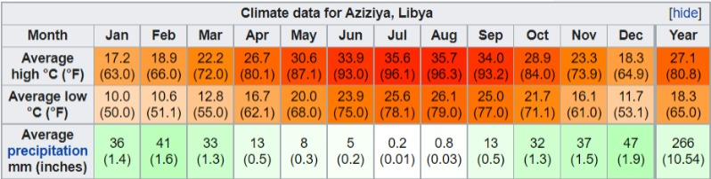

Climate
According to the Köppen climate classification, 'Aziziya has a hot semi-arid climate (BSh). On 13 September 1922, a high temperature of 58.0 °C (136.4 °F) was recorded in Al-ʿAzīzīyah. This was long considered the highest temperature ever measured on Earth, however this record was deemed illegitimate in 2012 after an investigation by the WMO.
